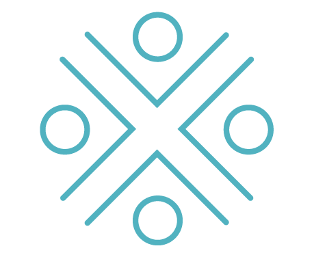
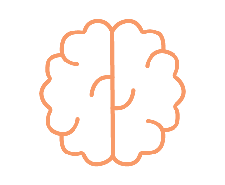
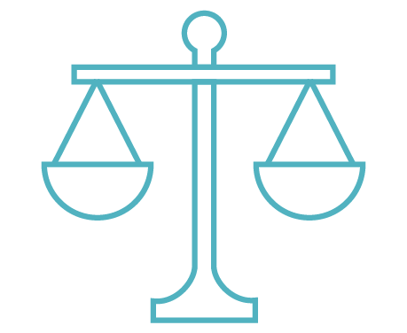
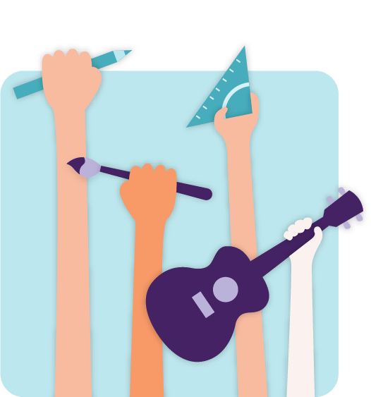
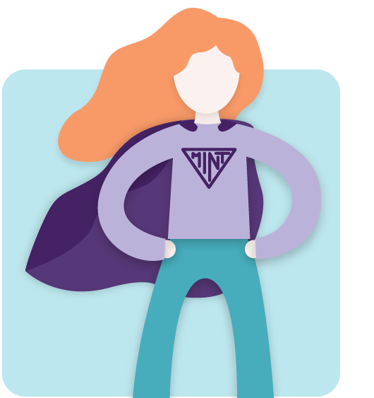
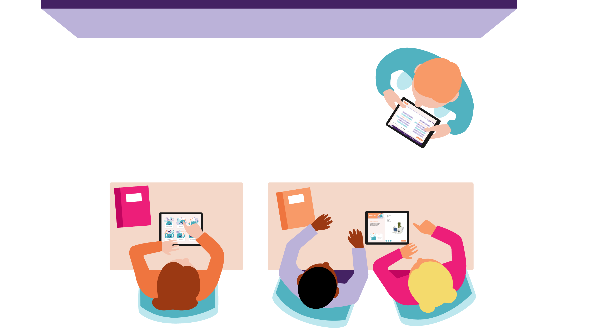
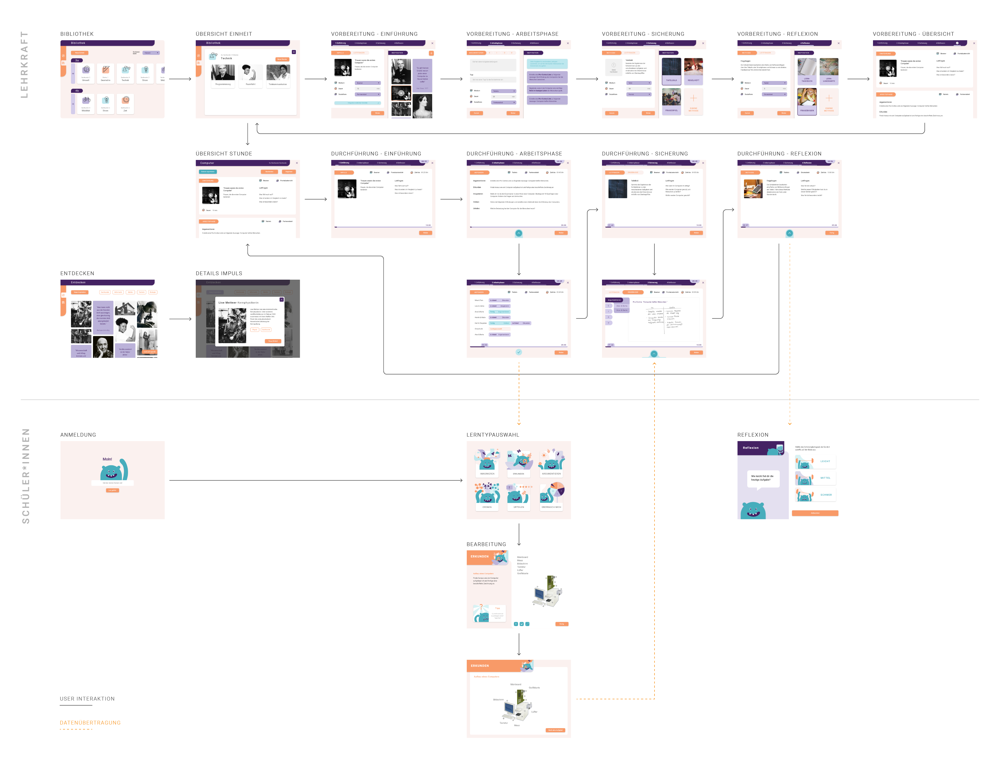
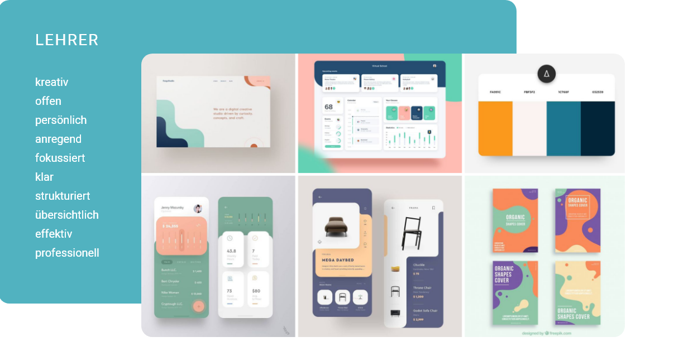
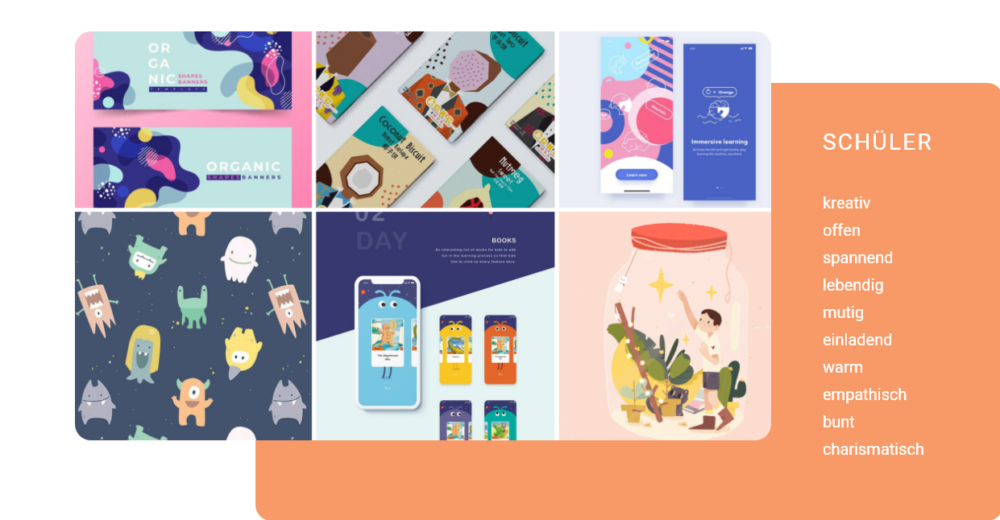
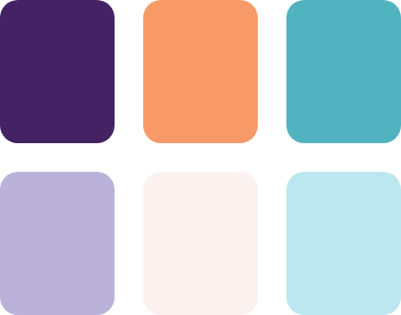

Zahlen
Die Bereiche der Mathematik, Informatik, Naturwissenschaften und Technik – kurz MINT – gelten auch heute noch als Männerdomäne. Obwohl sich die Zahl der weiblichen Studienanfänger laut einer Studie des Kompetenzzentrums Technik-Diversity-Chancengleichheit e.V. über alle MINT-Fächergruppen hinaus in den letzten 10 Jahren beinahe verdoppelt hat, ist der Frauenanteil von 2008 mit 30 Prozent bis 2018 mit 33 Prozent nahezu gleich geblieben (siehe Abbildung 1). Die wenigsten Frauen finden sich mit nur etwa 17 Prozent im ersten Fachsemesters der Elektro- und Informationstechnik, während das Bauingenieurwesen mit 30 Prozent den höchsten Frauenanteil hat. Betrachtet man die Frauenquote der Absolventen über alle Fachbereich der letzten 10 Jahre, so ist auch diese mit etwa 31 Prozent unverändert geblieben (siehe Abbildung 2) (Kompetenzzentrum Technik-Diversity-Chancengleichheit e.V. 2019). Zahlreiche, weltweite Studien, auf die in dieser Arbeit noch im Detail eingegangen wird, zeigen, dass sich Mädchen immer noch stark von stereotypischen Rollenbildern und Vorurteilen beeinflussen lassen. Dies hat einen starken Einfluss auf ihr Interesse und ihre Partizipation im MINT-Bereich, da dieser als männliche Fachrichtung behandelt wird.
Warum?
Inklusion in den Entwicklungsprozess
Eine Studie der Informatikerin Joy Buolamwini zeigte beispielsweise, dass bei Gesichtserkennungsalgorithmen von IBM oder Microsoft insbesondere die Quote bei schwarzen Frauen deutlich geringer ist als bei weißen Männern.
Höheres Innovationspotential
Die überwiegend männerdominierte Wissenschaft führt dazu, dass das Potential weiblicher Sichtweisen nicht ausgeschöpft wird. Mehr Diversität kann in mehr Kreativität und Innovation resultieren.
Wirtschaftlichkeit
Laut einer Studie des McKinsey Global Institutes aus dem Jahr 2015 kann das Schließen des Gender Gaps 28 Billionen Dollar, also 26 Prozent, zum globalen Bruttoinlandsprodukt beitragen.
Gleichberechtigung
Alle Menschen sollten die Möglichkeit haben, Berufswege frei von ihrem Geschlecht zu wählen, ohne sich Gedanken darüber machen zu müssen, ob eine Fachrichtung mit ihrer Geschlechteridentität konform ist.
Doch warum ist es so wichtig, sich dafür einzusetzen, mehr Frauen für MINT-Fächer zu begeistern? Die Biologin und Wissenschaftsforscherin Donna Haraway beschäftigte sich in ihrem 1988 erschienenen Aufsatz „Situated Knowledge: The Science Question in Feminism and the Privilege of Partial Perspective“ mit der mutmaßlichen Objektivität der Wissenschaft. Sie argumentiert, dass jegliche Forschung und Interpretation wissenschaftlicher Beobachtungen immer aus einer bestimmten Situation oder Perspektive heraus erfolgen und somit nicht als neutral oder objektiv bezeichnet werden können (Haraway 1988). Die überwiegend männerdominierte Wissenschaft führt demnach dazu, dass weibliche Sichtweisen, Bedürfnisse und Anforderungen nicht hinreichend in den Forschungsprozess einbezogen werden. Insbesondere in der Informatik, dem Ingenieurwesen, der Technik und den Naturwissenschaften werden Technologien und Produkte entwickelt, die unser aller Leben beeinflussen, formen oder auf andere Weisen betreffen. Demzufolge ist es essentiell allen Menschen die Partizipation an der technologischen und gesellschaftlichen Entwicklung zu ermöglichen und die Bedürfnisse und Wünsche aller möglichen Nutzergruppen einzubeziehen. Die fehlende Berücksichtigung von Frauen und Minderheiten kann zu der ungewollten Reproduktion von Stereotypen und im schlimmsten Fall zu Fehlbedienung oder Einschränkung der Nutzbarkeit von Technologien führen. Eine Studie der Informatikerin Joy Buolamwini des Massachusetts Institutes of Technology zeigte beispielsweise, dass bei Gesichtserkennungsalgorithmen von IBM oder Microsoft insbesondere die Quote bei schwarzen Frauen deutlich geringer ist als bei weißen Männern (Nickel 2018). Während etwa 99 Prozent männlicher, weißer Gesichter erkannt wurden, lag die Quote bei weißen Frauen bei 93 und bei schwarzen Frauen sogar bei nur 75 Prozent (Nickel 2018). Dieses Beispiel macht deutlich, dass sich sexistische und rassistische Tendenzen in Daten und Technologien widerspiegeln, was wiederum durch heterogenere Teams vermieden werden könnte. Darüber hinaus kann mehr Diversität in mehr Innovationspotential und Kreativität resultieren. Wichtig ist hierbei, dass die Arbeits- und Denkweisen von Mädchen und Frauen nicht als defizitär, sondern als bereichernde und ergänzende Fähigkeiten zu eher männlichen Verhaltensweisen wahrgenommen werden und sie nicht „männlicher“ sein müssen, um im MINT-Bereich erfolgreich zu sein.
Ein weiterer Faktor für die Wichtigkeit von Frauen in den MINT-Fächern ist außerdem ein aus dem immer schneller fortschreitenden Wandel der Technik und Digitalisierung resultierender Arbeitskräftemangel im technischen Bereich. Um die Vielzahl neuer Jobs, insbesondere im Bereich Technik und Informatik, besetzen zu können, scheint es unabdingbar, hierfür auch weibliche Arbeitskräfte auszubilden. So ist das Anstreben von mehr Diversität im MINT-Bereich nicht nur eine ethische und soziale, sondern auch eine ökonomische Frage. Laut einer Studie des McKinsey Global Institutes aus dem Jahr 2015 kann das Schließen des Gender Gaps 28 Billionen Dollar, also 26 Prozent, zum globalen Bruttoinlandsprodukt beitragen. Für die Berechnung wurden 15 „Gender Equality Indicators“, wie z.B. Autonomie oder Gleichberechtigung bei der Arbeit, aufgestellt und ein „full-potential“-Szenario konstruiert (Woetzel et al. 2015, S. 1).
Ein weiterer Punkt, der für die Förderung von Frauen und Mädchen im MINT-Bereich spricht, ist die Freiheit der Selbstverwirklichung, die durch die Zuschreibung von Rollenbildern zu den Geschlechtern eingeschränkt wird. Alle Menschen sollten die Möglichkeit haben, Berufswege frei von ihrem Geschlecht zu wählen, ohne sich Gedanken darüber machen zu müssen, ob eine Fachrichtung mit ihrer Geschlechteridentität konform ist. Aufgrund persönlicher Erfahrungen durch ein Bachelorstudium der Informatik konnte ich selbst erleben, wie ermüdend es sein kann, in einem männerdominierten Berufsfeld tätig zu sein und sich häufig Geschlechterklischees ausgesetzt zu fühlen. Unabhängig davon, ob es angeborene Unterschiede hinsichtlich beruflicher Neigungen oder Fähigkeiten gibt, sollte niemand seine Interessen aufgrund stereotypischer Rollenbilder unterdrücken oder verstecken müssen. Selbstverständlich sind auch Jungen und Männer solchen Stereotypen ausgesetzt und können in ihrer Berufswahl durch diese eingeschränkt oder beeinflusst werden. Aufgrund meines persönlichen Hintergrund und Interesses am MINT-Bereich fokussiere ich mich in dieser Arbeit jedoch überwiegend auf die Förderung von in diesen Fachrichtungen unterrepräsentierten Mädchen und Frauen.
Grundsätzlich bestätigen die Kompetenzunterschiede die verbreiteten Stereotype: die Mädchen sind besser im Lesen, während die Jungen in Mathematik und Naturwissenschaften besser abschneiden (Jahnke-Klein, S. 1). Gleichzeitig gibt es jedoch Länder wie Singapur, Neuseeland oder Lettland, in denen Mädchen am Ende der Grundschule sowohl mathematisch als auch naturwissenschaftlich kompetenter sind. Daraus lässt sich schließen, dass kulturelle Faktoren einen entscheidenden Einfluss auf die Leistungen zu nehmen scheinen (Jahnke-Klein, S. 2). Während Jungen und Mädchen die Grundschule noch mit den gleichen Voraussetzungen betreten, werden die Geschlechtsdifferenzen im Laufe der Grundschule zugunsten der Jungen immer größer. Auch in der Sekundarstufe I bleibt der Vorsprung der Jungen stabil und vergrößert sich in der Sekundarstufe II sogar noch weiter (Budde 2009, S. 19). Um diesen Problemen entgegenzuwirken, sollte die Unterstützung in der Berufsorientierung bereits frühzeitig ansetzen, da Mädchen vor der Adoleszenz noch offener gegenüber nicht „typisch weiblichen“ Tätigkeiten sind (Budde 2009).
Wähle eine der Kacheln, um mehr über die verschiedenen Faktoren zu erfahren.
Soziales Umfeld
Eltern, Familie und Freunde können Mädchen sowohl zum positiven als auch zum negativen in Bezug auf Interesse, Motivation und Partizipation in MINT-Fächern beeinflussen. Insbesondere Eltern können laut der Studie „Cracking the Code“ durch Unterstützung und Austausch von Erfahrungen eine wichtige Rolle in der Berufsentscheidung ihrer Kinder spielen. So kann besonders die Einstellung der Mutter und selbst im MINT-Bereich tätige Eltern einen positiven Einfluss auf die Wahrnehmung der eigenen Fähigkeit der Mädchen haben, da sie so eher an eine MINT-Karriere gewöhnt werden. Eine negative Wirkung kann wiederum die unterschiedliche Behandlung von Jungen und Mädchen in Bezug auf Werte und Erwartungen haben, da so negative Stereotype über das Geschlecht und die entsprechenden MINT-Fähigkeiten verstärkt und reproduziert werden könnten. Auch die Ethnie, Sprache, der Migrationsstatus und die Familienstruktur können die Partizipation und Performance von Mädchen im MINT-Bereich beeinflussen. Besonders während der Adoleszenz nehmen auch Freunde und andere Bezugspersonen Einfluss auf die Einstellung, das Verhalten, die Motivation und die Lernerfolge von Schülern und Schülerinnen. So neigen SchülerInnen mit Freunden, die Lernerfolge wertschätzen, eher dazu auch MINT-Fächer höher anzusehen (UNESCO (Paris) 2017, S. 47–48).
Das Geschlecht wird laut einer Studie des Bundesministeriums für Bildung und Forschung in unserer Gesellschaft als „umfassend-vereinheitlichendes Merkmal“ genutzt, obwohl es aus empirischer Sicht „die“ Geschlechter in Form von einheitlichen, strikt getrennten Gruppen nicht gibt (Bundesministerium für Bildung et al. 2006, S. 42). Hierbei werden die Verschiedenheiten von Mann und Frau in eine Rangordnung gebracht, in der die Leistung der Männer zumindest implizit als höher gewertet wird und den Maßstab bildet. In der Diskussion über einen geschlechtssensiblen Unterricht äußert sich dies in den Zielsetzungen und vorgeschlagenen Maßnahmen. So scheint das Verhalten der Jungen in fachlicher Hinsicht den Normalzustand darzustellen, während das der Mädchen als Fehlorientierung wahrgenommen und durch geschlechtssensiblen Unterricht an das der Jungen angeglichen werden soll. Statt einer Angleichung an die Männer sollte das Ziel jedoch sein, die spezifischen Möglichkeiten und Präferenzen der Mädchen bei der Gestaltung des Unterrichts zu berücksichtigen. Hierbei ist zu beachten, dass die Gefahr einer „Umkehrung der Wertehierarchie“ besteht, bei der alles Frauenspezifische als das „Gute“ dargestellt wird. (Bundesministerium für Bildung et al. 2006, S. 41)
Biologische & kognitive Faktoren
Ein häufiges Argument in der Diskussion über die Geschlechterdifferenzen im MINT-Bereich ist die biologische Verschiedenheit von Frauen und Männern. So wird oft angenommen, dass Männer durch ihre Gehirnstruktur und andere biologische Veranlagungen von Grund auf eher die kognitiven Fähigkeiten für den Umgang mit mathematisch-naturwissenschaftlichen Themen haben, als Frauen. Zwar wurden in verschiedenen Studien Unterschiede in der Gehirnstruktur und -funktion zwischen Jungen und Mädchen festgestellt, jedoch keine oder kaum Unterschiede in kognitiven Fähigkeiten, der Kommunikation und bestimmten Persönlichkeitsvariablen gefunden, wie eine umfangreiche, weltweite Studie der UNESCO aus dem Jahr 2017 herausarbeitete (UNESCO (Paris) 2017, S. 41). Ihre kognitiven Fähigkeiten im Zusammenhang mit quantitativem Denken und dem Umgang mit Objekten im Raum entwickeln sich gleich gut (UNESCO (Paris) 2017, S. 41). Viele Erkenntnisse über die neurobiologische Differenzen stammen darüber hinaus aus der Tierforschung oder aus Laborsituationen, sodass sie nur eingeschränkt auf reale soziale Situationen übertragbar sind (Budde 2009, S. 25). Trotz der vielen Gemeinsamkeiten scheint es dennoch Unterschiede im Denkstil zwischen Mädchen und Jungen zu geben. Mädchen haben eher einen prädikativen Denkstil, also eine kognitive Struktur, die eher auf Ordnungsprinzipien und Beziehungsgeflechten basiert (Jahnke-Klein, S. 11). Sie streben zunächst ein umfassendes inneres Bild des zu erfassenden Gegenstands an, bevor sie zu einer Lösung kommen. (Jahnke-Klein, S. 11) Jungen hingegen weisen eher eine funktionale kognitive Struktur auf, denken also in Wirkungs- und Handlungsfolgen und starten mit ersten Lösungsversuchen, bevor die Gesamtidee vollständig strukturiert ist (Jahnke-Klein, S. 11).
Auch die Genetik wird häufig als wichtiger Einflussfaktor angesehen, da kognitive Fähigkeiten und die Bildungsleistung unter anderem durch genetische Veranlagung beeinflusst werden können. Allerdings gibt es auch hier keine wissenschaftlichen Beweise für genetische Unterschiede zwischen den Geschlechtern (UNESCO (Paris) 2017, S. 41). Darüber hinaus, können sich Gene je nach Umfeld und Entwicklungsstufe unterschiedlich manifestieren. (UNESCO (Paris) 2017, S. 41) Ein weiterer Faktor könnte auch die Wirkung von Hormonen auf das Verhalten von Mädchen und Jungen sein. Auch wenn Hormone keinen Einfluss auf die mathematischen oder räumlichen Fähigkeiten von Mädchen haben, könnte dennoch die Berufswahl beeinflusst werden, da stereotypisch männliche Berufe häufig mit Risikofreudigkeit und Wettkampf in Verbindung stehen (UNESCO (Paris) 2017, S. 42).

Psychologische Faktoren
Ein womöglich deutlich bedeutenderer Aspekt sind die psychologischen Faktoren, die wiederum durch die Gesellschaft und das Umfeld, in dem die Kinder aufwachsen, beeinflusst werden. Faktoren wie das Interesse, die Motivation und das Selbstkonzept von Jungen und Mädchen werden maßgeblich durch Stereotype, Vorurteile und Erwartungen geprägt. Lehrkräfte, Eltern und auch Kinder und Jugendliche selbst beurteilen Jungen fast von Beginn an als mathematisch begabter (Budde 2009, S. 5). Diese Erwartungshaltung führt bei Jungen zu einer gesteigerten Motivation, einem stärkeren Selbstvertrauen und schließlich zu besserer Leistung (Budde 2009, S. 5). Zwar liegen die Fähigkeiten und Interessen von Jungen und Mädchen beim Schuleintritt noch nah beieinander (Budde 2009, S. 5), aber werden im Laufe der Schulzeit durch die Konfrontation mit geschlechtsstereotypischen Verhalten und Erwartungen zunehmend beeinflusst. So lernen sie schnell, dass Jungen in Mathe und Naturwissenschaften und Mädchen in Sprachen oder soziale Fächer besser abschneiden (Jahnke-Klein, S. 5). Diese Haltung hat einen negativen Einfluss auf die Erwartung von Mädchen an ihre Karriere, da von einem grundlegenden Talent für MINT-Fächer bei Jungen ausgegangen wird, welches bei ihnen nicht vorhanden sei (UNESCO (Paris) 2017, S. 43). Mädchen sehen mathematisch-naturwissenschaftliche Bereiche dementsprechend als nicht kompatibel mit ihrem Geschlecht an. Diese sogenannten „self-selection bias“ sind der Hauptgrund dafür, dass Mädchen sich weniger zu einer Karriere im MINT-Bereich hingezogen fühlen (UNESCO (Paris) 2017, S. 43). Stereotype haben also nicht nur einen negativen Effekt auf die Motivation und das Interesse junger Mädchen, sondern auch auf ihr Selbstvertrauen. Dies bestätigt sich durch die Tatsache, dass Mädchen, die beispielsweise Mathematik dem eigenen Geschlecht zuschreiben oder eine eher androgyne Rollenidentität haben, ein höheres Vertrauen in ihre mathematische Kompetenz haben (Jahnke-Klein, S. 6). Demnach ist auch das höhere Interesse der Jungen darauf zurückzuführen, dass dieses mit den Zuschreibungen zum männlichen Geschlecht und den entsprechenden Erwartungen korreliert (Jahnke-Klein, S. 6).
Auch durch das Verhalten der Lehrkräfte werden Stereotype gestärkt, da sie Leistungsdefizite bei Jungen häufig auf fehlenden Willen und bei Mädchen auf fehlende Kompetenz zurückführen (Budde 2009, S. 41). Geschlechtsinszenierungen werden unterstützt, indem Jungen für gute Leistung und „oppositionelle Haltung“ und Mädchen für Fleiß oder Unsicherheit gelobt werden (Budde 2009, S. 6). Die Stereotypisierung wird außerdem in Bezug auf die wahrgenommenen Erwartungen an die Schüler deutlich, da an Jungen meist höhere Anforderungen gestellt werden (Jahnke-Klein, S. 6). Dies wirkt sich wiederum negativ auf die Mädchen aus, denn je höher die Erwartung der Lehrperson an die SchülerInnen wahrgenommen wird, desto besser ist das Selbstvertrauen der Schüler (Jahnke-Klein, S. 6). Auch für die Jungen hat dies negative Folgen, da sie dazu neigen, ihre eigenen Fähigkeiten zu überschätzen. (Budde 2009, S. 6)
Doch nicht nur das Umfeld, sondern auch die Mädchen selbst beteiligen sich stark an der Konstruktion von Stereotypen. Da die Kinder das Geschlecht als eine „bedeutsame Kategorie in der sozialen Umwelt“ wahrnehmen, streben sie die Aneignung geschlechtstypischer Verhaltensweisen und Fähigkeiten selbst an (Jahnke-Klein, S. 13). Dies führt dazu, dass Kinder nach Informationen suchen, die die Unterschiede zwischen den Geschlechtern betonen, und ihr Verhalten davon ableiten, was angemessen für ihr Geschlecht ist (Jahnke-Klein, S. 13). Eine Untersuchung an 16- bis 20-jährigen Mädchen, die ein besonderes Interesse an Computern haben, ergab, dass die meisten Mädchen aus Angst als „Mannsweiber“ oder „Emanzen“ zu gelten, dazu neigen ihr Interesse zu verstecken (Jahnke-Klein, S. 7). Auch die bestehenden Stereotype gegenüber MINT-Fachkräften, dass diese beispielsweise sozial inkompetent oder unattraktiv seien, verstärkt dieses Verhalten (UNESCO (Paris) 2017, S. 43). Auf der anderen Seite wurde auch von einem gesteigerten Selbstwertgefühl berichtet, weil sich die Mädchen als „besonders“ oder nicht „so weiblich“ fühlten (Jahnke-Klein, S. 7). Dies ist jedoch eine problematische Form der Anerkennung für einen Teenager, da so unter anderem suggeriert wird, dass es per se etwas Negatives ist, sich stereotypisch weiblich zu verhalten. Darüber hinaus zeigten die Jungen kaum Interesse für die Computerbeschäftigung der Mädchen. Zusätzlich wurde ihnen durch die Verheimlichung des Interesses der Mädchen nicht die Erfahrung geboten, dass auch Frauen und Mädchen kompetent in diesen Bereichen sein können (Jahnke-Klein, S. 7).
Schulisches Umfeld
Insbesondere die Lehrkräfte und die verwendeten Lehrmethoden spielen im Schulkontext eine entscheidende Rolle in der Motivation der Schüler. Eine Lehrkraft wird laut der Studie „Cracking the Code“ der UNESCO als qualitativ hochwertig wahrgenommen, wenn die Fachexpertise, pädagogische Kompetenz, Erfahrung, das Selbstbewusstsein im MINT-Bereich und eine allgemeine Zufriedenheit mit der Karriere aufweist. Besonders weibliche Lehrer können sowohl Mädchen als auch Jungen positiv beeinflussen, da sie als Vorbilder fungieren, Mythen widerlegen und so das Selbstvertrauen und Interesse stärken können. Aktuelle Studien zeigen jedoch, dass sowohl weibliche als auch männliche Lehrkräfte selbst eine stereotypische Wahrnehmung von Mathe und Naturwissenschaften als Jungendomäne haben (Budde 2009, S. 6). Viele Lehrkräfte nehmen an, Mädchen würden gute Leistung durch Anstrengung und Jungen durch eine „Grundbegabung“ erreichen. Diese Haltung hat einen besonders negativen Effekt auf die Schülerinnen, da je höher die Erwartungen an die Leistung und je geringer die Darstellung der Fächer als männliche Domäne ist, umso höher ist das Selbstvertrauen der Mädchen. Allein die bloße Vermutung, dass die Lehrperson sie als weniger kompetent einschätzen („perzipierte Fähigkeitsfremdeinschätzung“), wirkt sich bereits in der Grundschule negativ auf die Lernerfolge und das Selbstkonzept aus.
Ebenfalls zu beachten sind die verschiedenen Stärken von Jungen und Mädchen in Bezug auf die Unterrichtsgestaltung, da es beispielsweise Unterschiede in der Unterrichtsbeteiligung, dem Leistungsverhalten und dem Umgang mit verschiedenen Aufgabentypen zu geben scheint (Budde 2009, S. 7). Durch das zurückhaltende Verhalten der Mädchen kann schnell der Eindruck entstehen, dass Jungen tendenziell unterfordert und Mädchen unsicher oder inkompetent sind. Diese Beobachtung muss jedoch nicht auf reale Kompetenzunterschiede zurückzuführen sein, sondern spiegelt teils Geschlechtsstereotype wider. Jungen gelten als mathematisch kompetent, sodass ein langsamer Unterricht nicht „jungengerecht“ ist, während Mädchen sich schlechter einschätzen, um soziale Gemeinsamkeiten hervorzuheben (Budde 2009, S. 34).
Praxis- & Lebensweltbezug
Eine der wichtigsten Empfehlungen für den MINT-Unterricht ist der stärkere Bezug der Inhalte zur Lebenswelt der Mädchen. Es sollte klar gemacht werden, wie die Inhalte und Fähigkeiten ihren Alltag und das Leben anderer Bereichern können.
Lerntypen & Arbeitsweisen
Mädchen haben häufig andere Arbeitsweisen und Denkstile als Jungen. Durch Differenzierung und Individualisierung in der Darbietung der Unterrichtsinhalte sollen die verschiedenen Lerntypen stärker berücksichtigt werden.
Reattributions-
training

Mädchen neigen dazu, Erfolge auf Glück und Misserfolge auf fehlende Begabung oder Fähigkeiten zurückzuführen. Durch das sogenannte Reattributionstraining soll die Ursachenzuschreibung von Erfolgen und Misserfolgen verändert werden.
Weibliche Vorbilder
Mit der Unterrepräsentation von Frauen im MINT-Bereich geht ein Mangel an weiblichen Vorbildfiguren einher. Um Stereotype, Vorurteile und Rollenbilder aufzubrechen sollten positive MINT-Identitäten und weibliche Vorbilder in den Unterricht integriert werden.
Eine Vielzahl der empfohlenen Ansätze beziehen sich auf die Überarbeitung des Curriculums und Lehrangebots und empfehlen unter anderem eine stärkere Praxis- und Lebensweltorientierung. Hierbei spielt vor allem die Diversität der Schulerfahrungen eine wichtige Rolle, sodass möglichst verschiedene „Hands-on“-Aktivitäten sowie interaktives und kreatives Arbeiten angeboten werden sollte (UNESCO (Paris) 2017, S. 66). Den Schülern und Schülerinnen sollte Zeit für Nachfragen und Raum zum Experimentieren, Üben und Reflektieren gegeben werden, um ein Umfeld zu schaffen, in dem Neugier und Interesse langfristig geweckt werden (UNESCO (Paris) 2017, S. 66). Außerdem wünschen sich die Kinder die Möglichkeit, Kenntnisse und Fähigkeiten über den Unterricht hinaus zu üben und zu vertiefen, z.B. durch zusätzliches Übungsmaterial (Jahnke-Klein, S. 10), Ausflüge, Museumsbesuche oder Arbeitsgruppen (UNESCO (Paris) 2017, S. 67). Ein besonders großer Effekt wird außerdem einem stärkeren Bezug zur Lebenswelt der Schülerinnen und Schüler beigemessen. Die Relevanz von MINT-Fächern für Situationen des echten Lebens und Alltags sollte im Unterricht stärker verdeutlicht werden, indem ein Bezug zum eigenen Körper hergestellt wird und die Themen im Kontext mit Umwelt, Natur und Gesellschaft behandelt werden (Bundesministerium für Bildung et al. 2006, S. 77). Mädchen scheinen naturwissenschaftliche Inhalte erst zu verstehen, wenn ihnen „die Zusammenhänge zwischen Begriffsnetzen aus ihrem Alltag und physikalischen Konzepten“ klar werden und sie „eine Bereicherung für ihr Leben erwarten dürfen“ (Bundesministerium für Bildung et al. 2006, S. 56). Idealerweise lernen sie in der Schule Fähigkeiten, die sie direkt im außerschulischen Kontext anwenden können, zum Beispiel um Dinge zu reparieren (Mosatche et al. 2013, S. 23). Hierbei ist jedoch zu beachten, dass Jungen sich weniger interessiert zeigen, wenn wissenschaftliche Inhalte in „femininem“ Kontext präsentiert werden, da sie sich beispielsweise eher für technologische und mechanische Zusammenhänge interessieren (Kerger et al. 2011, S. 6). So wäre eine Lernumgebung ideal, in der die Schüler und Schülerinnen selbst den Kontext, in dem sie ein Konzept erlernen wollen, wählen können (Kerger et al. 2011, S. 1).
Darüber hinaus könnte durch ein interaktives System auch auf die verschiedenen Lerntypen und Arbeitsweisen der Schülerinnen und Schüler eingegangen werden, indem verschiedene Aufgabentypen angeboten werden. Allgemein sollte ein Unterrichtsmodell angestrebt werden, in dem Inhalte und Methoden individuell an die Schülerinnen und Schüler angepasst werden, ohne dass das Geschlecht ein Parameter für die Klassifizierung darstellt und implizite Normen für ein „richtiges“ Verhalten kommuniziert werden (Bundesministerium für Bildung et al. 2006, S. 43). Geschlechtsaspekte sollten möglichst eher beiläufig eingebracht werden, sodass ihnen ein „Charakter des Selbstverständlichen“ verliehen wird (Bundesministerium für Bildung et al. 2006, S. 13).
Auch auf pädagogischer Ebene werden verschiedene Maßnahmen dargestellt, die vor allem stereotypischem Verhalten von Jungen und Mädchen, das das Interesse und Engagement an MINT-Fächern häufig beeinflusst, entgegenwirken und das Selbstvertrauen der Mädchen stärken sollen. Allgemein wünschen sich die Schülerinnen und Schüler eine intensive Kontrolle der Ergebnisse und „Haltegriffe“ zur Unterstützung und Strukturierung (Jahnke-Klein, S. 10). Ein häufig empfohlener Ansatz ist das sogenannte Reattributionstraining, durch das die Ursachenzuschreibung von Erfolgen und Misserfolgen verändert werden soll (Budde 2009, S. 57). Bei Erfolgen sollen demnach die Fähigkeiten der Schülerinnen und beispielsweise deren Konsistenz hervorgehoben werden (Budde 2009, S. 58). Misserfolge hingegen sollten beispielsweise auf mangelnde Anstrengung zurückgeführt und die Ausbaufähigkeit und Erweiterbarkeit von Fähigkeiten betont werden (Bundesministerium für Bildung et al. 2006, S. 58).
Ein weiterer häufig genannter Faktor ist die Darstellung positiver MINT-Identitäten und der Kontakt zu Vorbildern im MINT-Bereich, mit denen sich die Mädchen identifizieren können (UNESCO (Paris) 2017, S. 66). Besonders wichtig ist hierbei, dass MINT-Fachkräfte ihre persönlichen Erfahrungen und Herausforderungen teilen und zeigen, dass sie auch über das Arbeitsleben hinaus ein interessantes und erstrebenswertes Leben haben, um Stereotype abzubauen (Mosatche et al. 2013, S. 24). Dies ist besonders effektiv, wenn die Fachkräfte einen ähnlichen Hintergrund wie die Mädchen haben, da sie sich so selbst besser in ähnlichen Positionen sehen können (Mosatche et al. 2013, S. 24). Auch die Lehrkräfte selbst sollten eine Vorbildrolle einnehmen und zu einer positiven „Science Identity“ beitragen, indem sie unter anderem eine genderneutrale Sprache verwenden und Beispiele für Erfolgsgeschichten aus der Wissenschaft präsentieren (UNESCO (Paris) 2017, S. 66). Durch frühzeitige Berufsberatung und das Entdecken von Karriereoptionen, sollte darüber hinaus der Bezug zum Berufsleben klarer gemacht werden (Mosatche et al. 2013, S. 23).
Marktrecherche
Um einen Überblick über das bestehende Angebot zur Förderung junger Mädchen sowie über (digitale) Lehr- und Lernmittel im MINT-Bereich zu bekommen, habe ich Apps & andere Softwareprodukte, Programme und Workshops, Spielzeuge und Tools gesammelt, die im Unterricht zur Organisation oder in der Unterrichtsdurchführung genutzt werden können. Diese habe ich in die folgenden Bereiche kategorisiert: Lernmedien, Programme & Workshops und Organisation & Vorbereitung.
Grundsätzlich zeigte sich, dass das größte Angebot für das Fach Mathematik besteht, für das es eine Vielzahl an Übungs-Apps, Spielen und anderen Anwendungen für den überwiegend außerschulischen Einsatz gibt. Auch um das Programmieren zu lernen, existiert bereits eine Vielzahl von digitalen und physischen Produkten, mit denen auch im Grundschulalter Schüler und Schülerinnen an das Fach Informatik herangeführt werden können. Die am weitesten verbreiteten Anwendungen sind hier beispielsweise Scratch - eine grafische, bausteinbasierte Programmierumgebung, oder Produkte von LEGO wie der Modellbausatz “WeDo 2.0”. Im Bereich Physik wird überwiegend Software zur Visualisierung physikalischer Phänomene oder zur Simulation von Versuchen angeboten. Am geringsten ist die Auswahl an Anwendungen für Biologie und Chemie. Hier sind nur wenige Apps z.B. zur Veranschaulichung biologischer Zusammenhänge zu finden.
Aktuell scheint es nur in der Informatik konkrete Produkte zu geben, die speziell für den Unterricht entwickelt wurden und ohne zusätzlichen Aufwand in diesen integriert werden können. Für alle anderen MINT-Fächer gibt es zwar Ansätze für Übungs- oder Simulationsanwendungen, die aber häufig nur für einen sehr konkreten Einsatzbereich oder Inhalt konzipiert sind. Anwendungen, die geschlechtsspezifische Faktoren mit einbeziehen, scheinen momentan noch nicht zu existieren.
Interviews
Um einen Einblick in den MINT-Unterricht, den aktuellen Einsatz digitaler Medien und die Rolle geschlechtsspezifischer Aspekte an der Grundschule zu bekommen, schrieb ich verschiedene Schulen in Kiel an, die auf ihrer Webseite mit einem Fokus auf Computer, MINT oder Digitalität warben. Schließlich erhielt ich eine Antwort der Lernwerft, einer privaten Gemeinschaftsschule mit einem MINT-Profil in der Sekundarstufe, und der Fritz-Reuter-Grundschule, die Computerunterricht in der dritten und vierten Klasse anbietet.
Lernwerft, Kiel
In der Lernwerft führte ich ein Interview mit dem Schulleiter und MINT-Lehrer Marco Dittrich und wurde anschließend durch die Arbeitsräume für Chemie, Biologie und Informatik geführt, um einen Eindruck der Ausstattung und des Arbeitsumfeldes zu bekommen.
Grundsätzlich bestätigte Herr Dittrich, dass bei Jungen und Mädchen verschiedene Arbeitsweisen beobachtet werden können. Er berichtete, dass Jungen häufig einfach anfangen auszuprobieren, während Mädchen zunächst versuchen, sich einen Überblick zu verschaffen. Um auf die verschiedenen Denkstile der Kinder einzugehen, wird in der Lernwerft häufig die “kognitive Landkarte” verwendet, mithilfe dessen sich die Kinder selbst ihren Schwerpunkt suchen. Die Landkarte setzt sich aus den fünf Lerntypen Argumentieren, Erkunden, Imaginieren, Ordnen und Urteilen zusammen und bietet den SchülerInnen zu jedem Typ eine andere Aufgabe zu einem bestimmten Thema an. Diese Methode wurde zu einer meiner Hauptinspirationen für die Integration verschiedener Lerntypen innerhalb meines Projekts. ...Zum Einsatz digitaler Medien berichtete Herr Dittrich, dass besonders die Verbindung aus Virtualität und Realität gut bei den SchülerInnen ankomme. Grundsätzlich solle bei digitalen Medien immer der Nutzen und die Inhalte und nicht das Gerät selbst im Vordergrund stehen. Ein weiterer bemerkenswerte Aspekt war darüber hinaus die Tatsache, dass in der Lernwerft der Unterricht in den Fächern Technik und Kunst in der fünften und sechsten Klasse geschlechtergetrennt durchgeführt wird. Hierbei berichtete Herr Dittrich von positiven Erfahrungen, da sich die Schülerinnen mehr öffnen und selbstbewusster sind und die Jungen weniger unter Druck stehen, alles können und wissen zu müssen. Auch über die beiden Fächer hinaus seien diese positiven Effekte zu beobachten.
Fritz-Reuter-Schule, Kiel
Nach meinem Besuch in der Lernwerft erwies es sich als wichtig, auch eine “Normschule” zu besuchen, die keinen expliziten Fokus auf Geschlechtsaspekte und MINT-Förderung hat. Hierzu bekam ich die Möglichkeit einen Tag im Computerunterricht an der Fritz-Reuter-Schule in Pries zu hospitieren. Über drei Schulstunden konnte ich eine dritte, eine vierte und eine zweite Klasse im Unterricht im Computerraum begleiten und so einen Eindruck davon bekommen, wie weit die Kinder in den verschiedenen Klassen sind, welche Inhalte und Methoden sie begeistern zu scheinen und wie sich die Jungen und Mädchen im technischen Unterricht verhalten.
Auch hier bestätigten sich die Stereotype, dass die Jungen lauter sind und häufig bekunden, wie viel sie schon geschafft haben. Die Mädchen hingegen waren ruhiger und unsicherer und haben häufiger nach Hilfe gefragt - meist jedoch eher aus Bequemlichkeit oder um die Aufmerksamkeit des Lehrers zu bekommen. Auch der Lehrer reproduzierte unbeabsichtigt Rollenbilder, indem er zu Beginn einer Stunde sagte “Was wir heute machen ist ein bisschen weniger spannend für die Mädchen… Nein, das ist für euch genauso spannend! Wir programmieren heute etwas mit Star Wars.”.... Dies führte dazu, dass ein Mädchen sagte, Star Wars sei etwas für Jungen, und andere Mädchen, die die Thematik eigentlich spannend zu finden schienen, sich nicht mehr trauten, ihre Begeisterung dafür offen zu bekunden. Diese beobachtete Situation war schließlich der Hauptauslöser dafür, dass ich den Fokus in meinem Projekt nicht mehr auf die Schüler selbst, sondern die Lehrkräfte setzte.
Eine weitere Erkenntnis des Hospitieren war außerdem, dass die Zielgruppe meiner Anwendung neben den Lehrkräften vor allem SchülerInnen ab der dritten Klasse sein sollten, da vorher bestimmte Grundfähigkeiten, wie Lesen, Schreiben oder Rechnen noch nicht erlernt wurden und komplexere MINT-Themen nur schwer bearbeitet werden können.
Lehrergespräche
Insbesondere aus Gesprächen mit LehrerInnen haben sich neben der Integration der oben aufgeführten Maßnahme noch einige Anforderungen an das System ergeben. Das System sollte möglichst einfach und ohne zusätzlichen Aufwand in den Unterricht integriert werden können und die Inhalte flexibel, modular und leicht anpassbar sein. Der Einsatz digitaler Medien sollte stets sinnstiftend und nicht um der Digitalität Willen eingesetzt werden. Außerdem sollten Jungen und ihre Arbeitsweisen und Präferenzen in der Gestaltung nicht benachteiligt sondern gleichermaßen angesprochen werden.
Zielgruppe
Da Studien zu diesem Thema und die daraus abgeleiteten Maßnahmen häufig bereits in der frühen Schulzeit ansetzen, fokussiere ich mich in meinem Projekt auf die Förderung von Mädchen in der Grundschule und frühen Sekundarstufe. Da in den ersten zwei Jahren der Grundschule jedoch für viele MINT-Fächer notwendige Grundfähigkeiten wie lesen und rechnen noch nicht erlernt wurden, scheint es sinnvoller, sich auf den Unterricht ab der dritten Klasse zu fokussieren. Generell sollte möglichst früh angesetzt werden, da die Sozialisation auf der weiterführenden Schule bereits recht weit fortgeschritten ist und das stereotypische Verhalten der Kinder schon recht fest verankert sein kann. Dennoch birgt die Nutzung des Systems auch in der Sekundarstufe ein hohes Potential, da viele Inhalte, die beispielsweise einen Bezug zu weiblichen Vorbildern oder der Lebenswelt der SchülerInnen herstellen können, erst auf der weiterführenden Schule unterrichtet werden.
Während ich mich zu Beginn vor allem auf die SchülerInnen fokussierte, um möglichst einen direkten Einfluss auf ihre Wahrnehmung und Motivation zu nehmen, ergab sich im Laufe des Prozesses, dass der Einfluss, den die Lehrkräfte auf die SchülerInnen nehmen können, potentiell höher ist. Da die LehrerInnen eine höhere Reflexionsvermögen und ein stärkeres Bewusstsein für Genderaspekte haben, können sie die durch das System empfohlenen Maßnahmen bewusster und gezielter einsetzen. Die Applikation sollte hierzu einfach zu bedienen und in den Unterricht zu integrieren sein, sodass auch weniger technikaffine Lehrkräfte diese nutzen können und die Hemmschwelle für die Verwendung möglichst gering ist.
MINT-bezogene Unterrichtsthemen
Um Ansatzpunkte für die Integration der Aufgaben zu identifizieren sammelte ich die MINT-bezogenen Unterrichtsthemen und Kompetenzen, die in der Grundschule vermittelt werden sollen. Insbesondere die Punkte zur Medienkompetenz zeigten, dass der Einsatz digitaler Medien Teil des Unterrichts sein sollte, um den Umgang mit diesen zu üben. In den verschiedenen Themenfeldern sah ich insbesondere das Potential, weibliche Vorbilder in den Unterricht zu integrieren, da ich bei meinen Recherchen auf viele Erfinderinnen und Wissenschaftlerinnen stieß, die sich gut als Impulse für den Unterricht zu eignen schienen.
Nutzungskontext
Um Ansatzpunkte für die Integration der Aufgaben zu identifizieren sammelte ich die MINT-bezogenen Unterrichtsthemen und Kompetenzen, die in der Grundschule vermittelt werden sollen. Insbesondere die Punkte zur Medienkompetenz zeigten, dass der Einsatz digitaler Medien Teil des Unterrichts sein sollte, um den Umgang mit diesen zu üben. In den verschiedenen Themenfeldern sah ich insbesondere das Potential, weibliche Vorbilder in den Unterricht zu integrieren, da ich bei meinen Recherchen auf viele Erfinderinnen und Wissenschaftlerinnen stieß, die sich gut als Impulse für den Unterricht zu eignen schienen.

Digitale Lernmedien
"Der Einsatz digitaler Unterrichtsmedien [kann] über alle untersuchten Unterrichtsfächer Mathematik, Physik, Biologie und Chemie hinweg insgesamt als gewinnbringend bezeichnet werden.“
(Hillmayr et al. 2017)
Allgemein lässt sich sagen, „dass der Einsatz digitaler Unterrichtsmedien über alle untersuchten Unterrichtsfächer Mathematik, Physik, Biologie und Chemie hinweg insgesamt als gewinnbringend bezeichnet werden kann“(Hillmayr et al. 2017). Wichtig in der Nutzung ist, dass immer eine gewissen Struktur vorgegeben und die konkreten Lernziele erkennbar sein sollten. Ein großer Vorteil digitaler Lernmedien ist die Möglichkeit, Informationen multimedial darzubieten und so mehrere Sinneskanäle gleichzeitig anzusprechen. Menschen können durch die Darbietung von Information in Form von Bildern und Worten besser lernen, als durch Worte allein, sodass die Kombination aus visuellen, auditiven und schriftlichen Informationen zu einem besseren Lernerfolg führen. Digitale Unterrichtsmedien erweisen sich als besonders nützlich, wenn sie ergänzend zu traditionellem Material und in Paaren oder Kleingruppen genutzt werden. Die Lehrkraft wird hierbei zum Berater und Moderator und wird lediglich konsultiert, wenn Hilfe benötigt wird. Auch eine Differenzierung der Inhaltsvermittlung wird durch digitale Unterrichtsmittel erleichtert, da die individuellen Leistungen und Voraussetzungen der Lernenden berücksichtigt werden können und die Lehrkraft eine Rückmeldung über das Vorankommen der Schüler erhalten kann.
Zu den zu beachtenden Nachteilen zählt unter anderem der „Neuheitseffekt“, nach dem der positive Einfluss vor allem bei kurzfristigem Einsatz am stärksten ist. Dennoch ist auch bei einer langfristigen Nutzung immer noch ein positiver Effekt zu beobachten. Wichtig ist jedoch, dass nicht die Begeisterung am Medium selbst, sondern an den jeweiligen Inhalten und dem unterrichteten Fach im Fokus steht. Ein deutlich kritischerer Faktor ist der Bildungsstand der Lehrkräfte in Bezug auf digitale Medien und die häufig damit einhergehende Motivation für die Nutzung im Unterricht. Während des Berufslebens werden Lehrkräfte nicht ausreichend fortgebildet und auch im Lehramtstudium finden Inhalte zu digitaler Bildung nur am Rande statt. Besonders in der Unterrichtsvorbereitung sehen fast die Hälfte der Lehrkräfte einen Nutzen, empfinden es jedoch als zu aufwändig und zeitintensiv passende, frei nutzbare Materialien im Internet zu finden und deren Qualität zu beurteilen (Schmid et al. 2017, S. 41). Häufig ist darüber hinaus auch die Ausstattung der Schulen nicht hinreichend, da nicht an allen Schulen Geräte wie Tablets, Computer oder interaktive Tafeln zur Verfügung stehen (Schmid et al. 2017, S. 22).
Erster Konzeptansatz
Basierend auf den Ergebnissen meiner Recherchen begann ich zunächst ein Konzept mit Fokus auf die SchülerInnen als primäre Nutzer zu entwickeln. Hierbei beschäftigte ich mich vor allem mit der Bearbeitung von Übungsaufgaben zu einem bestimmten Thema sowohl während des Unterrichts als auch darüber hinaus nach der Schule.
Um die im vorherigen Kapitel beschriebenen Maßnahmen im Unterricht direkt an den Schülerinnen anzuwenden, versuchte ich eine Anwendung zu konzipieren, mit der die Schüler selbst Aufgaben im Unterricht und darüber hinaus bearbeiten können. Um die verschiedenen Lerntypen einzubeziehen, sollten die Schüler selbst die Form der Aufgabenstellung zu einem bestimmten Thema auswählen können. Die Aufgaben sollten so gestellt werden, dass sie einen direkten Bezug zum Leben und Alltag der SchülerInnen herstellen. Hier zeigte sich jedoch schnell, dass die Formulierung von Aufgabenstellungen in der Hand der Lehrkräfte liegen sollte und ich hierzu nicht die nötige Expertise besaß.
Der zweite Teil der Anwendung sollte eine Art digitales Lerntagebuch sein, in dem die Schülerinnen die Erkenntnisse der Stunde zusammenfassen können, um im Alltag wieder darauf zurückgreifen zu können. Außerdem sollte eine schriftliche und grafische Reflexion ein Teil des Lerntagebuchs sein, durch die der Lernfortschritt visualisiert und Reattributionstraining in die Anwendung integriert werden sollte.
Änderung des Projektfokus
Auch wenn Teile des Ansatzes im finalen Konzept wieder aufgegriffen wurden, erwies sich der Fokus auf die Schüler direkt als schwierig für mich als Designerin, da es viel um die Gestaltung der tatsächlichen Inhalte ging und weniger um den Rahmen und die Interaktionen. Problematisch war darüber hinaus die Tatsache, dass das Konzept davon ausging, dass jedes Kind auch über den Unterricht hinaus ein Tablet oder vergleichbares Gerät zur Verfügung hat.
Durch den Einblick in den MINT-Unterricht einer Grundschule verschob sich der Fokus des Projekts auf die Lehrkräfte statt auf die SchülerInnen selbst. Um einen Eindruck des Ablauf der Vorbereitung und Durchführung des Unterrichts zu bekommen, befragt ich verschiedene LehrerInnen zu ihrem Vorgehen bei der Planung und Umsetzung einer Stunde.
Lehrergespräche
In einem Gespräch mit der Referendarin Michal Plümer über ihr Vorgehen bei der Unterrichtsvorbereitung erfuhr ich von der Aufteilung des Unterrichts in die drei Phasen Einführungs-, Arbeits- und Sicherungsphase und die Strukturierung der Vorbereitung in sogenannten Stundenrastern. Die Stundenraster enthalten die Fragestellungen und Aufgaben der einzelnen Phasen sowie deren geplante Dauer und Sozialform (Einzel-/Gruppenarbeit, Frontalunterricht usw.). Auch die benötigten Materialien und Medien werden auf dem Bogen festgehalten. Dieses Gespräch brachte mich darauf, ein System zur Unterrichtsvorbereitung zu gestalten, dass auf den Inhalten und der Struktur eines Stundenrasters aufbaut, um die Integration möglichst leicht zu machen.
Zum Thema Integration der Vorbereitung in den Unterricht betonten alle befragten Lehrkräfte, dass sie während des Unterrichts möglichst wenig von dem System abgelenkt werden wollen und keine komplexen Interaktionen mit der Anwendung erforderlich sein sollten.
Storyboarding


Integration in den Unterricht
Während der Konzeption der Schüler-Seite des Systems war es mein Ziel, einen Mehrwert durch die Nutzung digitaler Medien zu generieren. Um Möglichkeiten hierfür zu identifizieren, erstellte ich mehrere Varianten für die Integration in den Unterricht, die sich vor allem im Grad der Digitalität unterschieden.
Aufgrund der Vorteile multimedialen Arbeitens und der Möglichkeit der Individualisierung der Inhalte entschied ich mich für mein Konzept für die dritte Variante und gestaltete ein recht simples System, das den Austausch von Daten zwischen Schülern und Lehrkraft ermöglicht bzw. erleichtert.
Da die Anwendung für die SchülerInnen lediglich in der Arbeits- und Reflexionsphase zum Einsatz kommt, bietet die Sicherungsphase die Möglichkeit, wieder die Brücke zur analogen Welt zu schlagen und die Ergebnisse für spätere Stunden analog festzuhalten. So kann auch in Stunden, die nicht mit dem System geplant und durchgeführt werden, auf die Inhalte der Stunde zurückgegriffen werden. ...Bei der ersten Variante sollte die Integration komplett analog erfolgen, indem die Lehrkraft die Aufgaben und Reflexionsfragen beispielsweise ausdruckt oder an die Tafel schreibt. Vorteil dieser Variante wäre, dass keine Tablets benötigt und die vorbereiteten Inhalte so auch in weniger ausgestatteten Schulen durchgeführt werden können.
Die zweite Variante ist eine halb digitale und halb analoge Integration, bei der die Tablets genutzt werden, um die Aufgaben und Fragen anzuzeigen und um im Internet zu den Aufgaben zu recherchieren. Die Bearbeitung hingegen erfolgt wieder analog auf dem Papier. Der Vorteil dieser Version wäre die Steigerung des Interesses der Kinder durch die Nutzung digitaler Medien und das weniger Ressourcen in Form von Papier oder Ähnlichem für die Bereitstellung der Aufgaben verwendet werden muss.
Bei der dritten Variante erfolgen sowohl Anzeige als auch Bearbeitung der Aufgaben und Fragen digital. Zusätzlich zu der Anzeige der Aufgaben erhalten die Kinder hier Tipps und Hinweise und können im Bearbeitungsbereich Text, Fotos oder andere Medien sammeln oder verlinken. In den Gesprächen mit verschiedenen Lehrkräften zeigte sich, dass die Kinder durch die Bearbeitung der Aufgaben im digitalen Raum multimediales Arbeiten und das Recherchieren im Internet lernen. Durch das digitale Beantworten der Reflexionsfragen ergibt sich außerdem die Möglichkeit, individuell auf die Antworten und Probleme der Kinder einzugehen, ohne dass die Lehrkraft mit jedem Kind einzeln sprechen muss. Die in der Vorbereitung hinterlegten Antwortmöglichkeiten und Hinweise ermöglichen zumindest in einem gewissen Rahmen eine individuelle Reaktion auf die Stärken und Schwächen der Kinder. Aufgrund dieser Vorteile entschied ich mich für mein Konzept für die dritte Variante und gestaltete ein recht simples System, das den Austausch von Daten zwischen Schülern und Lehrkraft ermöglicht bzw. erleichtert.
Wireframing
Tool zur Vorbereitung & Durchführung von Unterrichtsstunden
Der Hauptteil des finalen Konzepts ist ein Tool für Lehrkräfte, dass sie in der Vorbereitung des MINT-Unterrichts dabei unterstützt, Maßnahmen zur Förderung junge Mädchen in den Unterricht zu integrieren. Hierzu erhalten die Nutzer Inspirationen und Hinweise für die Inhalte der einzelnen Unterrichtsphasen Einführung, Arbeitsphase und Sicherung sowie der zusätzlichen Reflexionsphase. Die Anwendung dient nicht zwangsläufig zur Planung jeder einzelnen Stunde, sodass das Tool auch beispielsweise nur für eine einzige Stunde eingesetzt werden kann. Das Hauptziel meines Konzepts sollte sein, den Lehrkräften Inspirationen und Unterstützung bereitzustellen, ohne sie zu sehr in ihrer Arbeit einzuschränken. Das System soll einen Rahmen geben, dessen Inhalte und Gestaltung dennoch flexibel bleibt. Durch die Möglichkeit, eigene Inhalte oder Methoden zu erstellen, und eine möglichst breite Auswahl an Inspirationen soll dem Risiko eines generisch wirkenden Unterrichts entgegengewirkt werden.
Bibliothek
Die Bibliothek ist die Startseite des Systems und enthält alle vorbereiteten Unterrichtseinheiten. Diese können optional nach Klassen, Themen oder Fächern sortiert werden. Die einzelnen Einheiten enthalten wiederum die Stunden zu verschiedenen Unterthemen, die mithilfe der Applikation geplant wurden.
Entdecken
Im Menüpunkt “Entdecken” befindet sich die gesamte Inspirationsdatenbank des Systems. Hier kann nach Themen gesucht oder nach Fächern gefiltert werden, sodass Lehrkräfte sich inspirieren lassen können, wie sie einen stärkeren Fokus auf die Mädchenförderung setzen können. Dieser Bereich dient vor allem dazu, zu visualisieren, wie viele Impulse es gibt, die beispielsweise weibliche Vorbilder und historische Frauen darstellen, um zu verdeutlichen, dass es nicht schwer ist, diese zu finden und in den Unterricht zu integrieren.
Unterrichts-
vorbereitung
Die Vorbereitung ist orientiert am Aufbau eines Stundenrasters und somit unterteilt in die Schritte Einführung, Arbeitsphase, Sicherung und Reflexion. In jeder Phase wird links der Vorbereitungsbereich und rechts der Inspirationsbereich angezeigt, indem immer entsprechende Inspirationen und Hinweise zu den Maßnahmen zur Förderung angezeigt werden. Im Vorbereitungsbereich wird die aktuell ausgewählte Inspiration in Form eines Impulses, einer Aufgabe oder einer Methode angezeigt und die geplante Dauer, die benötigten Medien und Materialien sowie die Sozialform können festgelegt werden. In jeder Phase können darüber hinaus immer auch eigene Elemente erstellt werden, um ein hohes Maß an Flexibilität und Anpassbarkeit zu gewährleisten. Beim Erstellen eines neuen Elements kann der Nutzer diesen zur Nutzung durch andere Lehrkräfte bereitstellen, nachdem die Inhalte einer Qualitätssicherung unterzogen werden.
Nach der Auswahl des Inhalts kann die Lehrkraft in den Reiter “Leitfragen” im Inspirationsbereich wechseln, um dort die Fragestellungen der jeweiligen Phase zu definieren, die mit den SchülerInnen bearbeitet werden sollen.
Integration der Maßnahmen zu Mädchenförderung
Um die in Kapitel 3 beschriebenen Maßnahmen in die Vorbereitung zu integrieren, analysierte ich die verschiedenen Inhalte der Phasen und ordnete diesen die verschiedenen Handlungsansätze zu.
In der Einführung bot sich die Darstellung weiblicher Vorbilder an, da hier häufig mit Fotos, Videos oder Zitaten gearbeitet wird, anhand derer die SchülerInnen das Thema der Stunde erarbeiten sollen. Indem hier beispielsweise historische Frauen aus der Forschung präsentiert werden, können Stereotype und Vorurteile gegenüber Frauen im MINT-Bereich abgebaut werden.
In jeder Phase können die Lehrkräfte über Hinweisfelder zusätzliche Informationen zu den jeweiligen Maßnahmen abrufen, um diese zu verinnerlichen und idealerweise auch in anderen Stunden zu berücksichtigen. Die jeweiligen Inspirationen sollen in den Metadaten mit Tags versehen werden, die festhalten, welche Maßnahmen zur Mädchenförderung jeweils enthalten sind. So können die Hinweisfelder angepasst werden, falls bestimmte Maßnahmen in den vorgesehenen Phasen nicht berücksichtigt wurden. Wurde beispielsweise in der Einführungsphase ein eigener Impuls erstellt, der keine weiblichen Vorbilder integriert, erhält die Lehrkraft in der Arbeitsphase den Vorschlag, diese in die Aufgabenstellung zu integrieren.
Qualitätssicherung
Um die Qualität der Inhalte sicherzustellen, soll die Anwendung von einem Verlag entwickelt, bereitgestellt und betreut werden. Erstellt eine Lehrkraft einen neuen Impuls oder Aufgabenstellungen zu einem Thema und stellt diese zur Nutzung durch andere zur Verfügung, werden diese zunächst durch den Verlag geprüft und mit den Tags für die Förderungsmaßnahmen versehen. Durch eine professionelle Kontrollinstanz, soll ein hohes Maß an Qualität der angebotenen Inhalte vermittelt und den Lehrern erleichtert werden, qualitativ hochwertige Lehrmittel zu finden.
Durchführung einer Unterrichtsstunde
GUI-Map
Moodboards
Zu Beginn der Gestaltung erstellte ich zunächst Moodboards, in denen ich die angestrebte Gestaltung für die Schüler- und die Lehrer-Seite gegenüberstelle. Während das Lehrer-System ein eher strukturiertes aber dennoch kreatives und offenes Gefühl vermitteln sollte, strebte ich für das Schüler-Tool eine lebendige, empathische und charismatische Ästhetik an. Die beiden Systeme sollte sich insbesondere in ihrer Verspieltheit unterscheiden aber dennoch wie eine Einheit und “aus einem Guss” wirken. Das dem Ansatz zugrundeliegende “Feminismus-Mindset” sollte eher unterschwellig durch die Inhalte vermittelt werden und weniger “laut” in der Gestaltung sein.
 Farben
Die Einheit zwischen den beiden Seiten der Anwendung sollte vor allem durch einheitliche Farben dargestellt werden. Hierfür entschied ich mich für drei kräftige, aber nicht zu knallige Farben, um nicht zu sehr von den Inhalten abzulenken. Die Farbe Lila wird häufig im Zusammenhang mit Feminismus und in der Queer-Community genutzt, da sie Kraft und Selbstbewusstsein symbolisieren soll. Das Orange soll in Kombination dazu Optimismus und Kreativität verdeutlichen (www.lichtkreis.at/wissenswelten/welt-der-farben/).
In dem Lehrer-Tool setzte ich die Farben weitestgehend getrennt für die verschiedenen Bereiche ein (Inspirations- und Vorbereitungsbereich) und arbeitete mehr mit den helleren Abstufungen, um ein klarere Struktur zu erreichen. Im Schüler-Tool setzte ich hingegen die Volltöne stärker ein und kombinierte sie in den Illustrationen mehr miteinander, um das Interface verspielter und charismatischer wirken zu lassen.
Typographie
Als Schriftart wählte ich die auf der “Roboto” basierte Font “Heebo”, da diese durch gerade und klare Linien ein strukturiertes Bild ergibt aber durch den eher rundliche Schnitt ebenfalls zu dem verspielteren Design des Schüler-Tools passt.
Formen & Bewegung
Durch die Verwendung von Schatten, verschiedenen Ebenen und abgerundete Formen versuchte ich ein Gefühl von Flexibilität, Bewegung und Offenheit zu vermitteln. Auch durch die Animation der Ebenen, Übergänge und Interaktionen sollte dieser Effekt verstärkt werden.
Die Animationen sollten außerdem zur Lenkung der Aufmerksamkeit genutzt werden, beispielsweise um zu signalisieren, wenn die geplante Zeit einer Phase abgelaufen ist oder um die einzelnen SchülerInnen zum Üben eines bestimmten Lerntyps zu bringen.
Icons & Illustrationen
In dem Vorbereitungs-Tool nutzte ich Illustrationen insbesondere, um die Erläuterungen zu den jeweiligen Maßnahmen, die über die Hinweisfelder angezeigt werden können, zu untermalen. Durch die grafische Unterstützung der Texte sollen die Maßnahmen einprägsamer und verständlicher gemacht werden. Die verwendeten Icons zur Visualisierung des Themas einer Einheit sollen durch die Verbindung aus klaren Linien und versetzten Formen das Zusammenspiel aus Struktur und Offenheit der Anwendung unterstreichen.
In der Schüler-Applikation nutzte ich Illustrationen in Form eines wiederkehrenden, geschlechtsneutralen Charakters, der die Lerntypen visualisieren und deren Bedeutung untermalen sollten. Die verspielten Motive und Animationen sollen die Kinder motivieren und ihre Kreativität fördern. In der Reflexion dient die Figur als Gesprächspartner, sodass die Kinder weniger gehemmt sind, sich zu öffnen, wie sie es möglicherweise bei Fragen durch die Lehrkraft wären.
Durch den kürzlich beschlossenen Digitalpakt für Schulen könnte sich in den kommenden Jahren nicht nur die Nutzung digitaler Lernmedien sondern auch die Organisation und Struktur von Unterricht und Schulen verändern. Da es zur Zeit noch große Unterschiede im Umfang der Ausstattung verschiedener Schulen gibt, wäre anzustreben, die Integration des Tools in den Unterricht noch weiter zu vertiefen und für verschiedene digitale und analoge Medien zu konzipieren. Auch die Begleitung und Unterstützung durch das System während des Unterrichts sowie die Seite der Anwendung für die Schüler und Schülerinnen würde ich beim Weiterverfolgen des Projekts weiter ausbauen. In einem idealen Szenario, in dem jedes Kind ein eigenes, personalisiertes iPad oder anderes Gerät zur Verfügung hat, könnte das Tool auch über den Unterricht hinaus zum Beispiel für Hausaufgaben oder zur Übung genutzt werden. Auch die konkreten Inhalte der Anwendung in Form von Aufgaben, Impulsen und Leitfragen würde ich in der weiterführenden Arbeit in enger Zusammenarbeit mit Lehrkräften und Pädagogen konkretisieren.
- Budde, Jürgen (2009): Mathematikunterricht und Geschlecht. Empirische Ergebnisse und pädagogische Ansätze. Bundesministerium für Bildung und Forschung, Referat Bildungsforschung.
- Bundesministerium für Bildung; Wissenschaft und Kultur; BMBWK (2006): Begabungsförderung durch Geschlechtersensibilität in Mathematik, Naturwissenschaften und Technik.
- Fiske, Susan T.; Dasgupta, Nilanjana; Stout, Jane G. (2014): Girls and Women in Science, Technology, Engineering, and Mathematics. In: Policy Insights from the Behavioral and Brain Sciences 1 (1), S. 21–29. DOI: 10.1177/2372732214549471.
- Haraway, Donna (1988): Situated Knowledges. The Science Question in Feminism and the Privilege of Partial Perspective. In: Feminist Studies 14 (3), S. 575. DOI: 10.2307/3178066.
- Hillmayr, Delia; Reinhold, Frank; Ziernwald, Lisa; Reiss, Kristina (2017): Digitale Medien im mathematisch-naturwissenschaftlichen Unterricht der Sekundarstufe. Einsatzmöglichkeiten, Umsetzung und Wirksamkeit. Münster, New York: Waxmann. Online verfügbar unter https://content-select.com/de/portal/media/view/5aa25a06-c3bc-4392-9caa-27cab0dd2d03.
- Jahnke-Klein, Sylvia: Chancengleichheit für Mädchen und Jungen im mathematisch-naturwissenschaftlichen Unterricht. In: Lehren und Lernen nach IGLU - Grundschulunterricht heute, S. 117–132.
- Kerger, Sylvie; Martin, Romain; Brunner, Martin (2011): How can we enhance girls' interest in scientific topics? In: The British journal of educational psychology 81 (Pt 4), S. 606–628. DOI: 10.1111/j.2044-8279.2011.02019.x.27
- Kompetenzzentrum Technik-Diversity-Chancengleichheit e.V. (2019): MINT-Datentool. Online verfügbar unter https://www.komm-mach-mint.de/Service/Daten-Fakten/MINT-Datentool.
- Krämer, Sybille (Hg.) (2015): Ada Lovelace. Die Pionierin der Computertechnik und ihre Nachfolgerinnen. Wilhelm Fink GmbH & Co. Verlags-KG. Paderborn: Wilhelm Fink. Online verfügbar unter http://fox.leuphana.de/portal/de/publications/ada-lovelace(ff7df0a2-42d4-4ae0-8832-f93480574198).html.
- LEGO Group (2019): Kinder zum lebenslangen Lernen motivieren. Online verfügbar unter https://education.lego.com/de-de/grundschule/intro.
- Mosatche, Harriet S.; Matloff-Nieves, Susan; Kekelis, Linda; Lawner, Elizabeth K. (2013): Effective STEM programs for adolescent girls. Three Approaches and Many Lessons Learned.
- Nickel, Oliver (2018): Gesichtserkennung ist zuverlässig - bei weißen Männern. Hg. v. golem.de. Online verfügbar unter https://www.golem.de/news/maschinelles-lernen-gesichtserkennung-ist-zuverlaessig-bei-weissen-maennern-1802-132709.html.
- Schmid, Ulrich; Goertz, Lutz; Behrens, Julia; Bertelsmann Stiftung (2017): Monitor Digitale Bildung. Die Schulen im digitalen Zeitalter.
- UNESCO (Paris) (2017): Cracking the code. Girls' and women's education in science, technology, engineering and mathematics (STEM). Paris: Unesco.
- Woetzel, Jonathan; Madgavkar, Anu; Ellingrud, Kwellin; Labaye, Eric; Devillard, Sandrine; Kutcher, Eric et al. (2015): The Power of Parity: How Advancing Women's Equality Can Add $12 Trillion to Global Growth. Hg. v. McKinsey Global Institute. McKinsey&Company.
Danksagung
Ich bedanke mich bei Prof. Frank Jacob und Prof.In Annika Frye für die intensive Betreuung und Unterstützung während der Thesis und des gesamten Masterstudiums. Insbesondere danke ich Alex Niggemeyer für den täglichen Austausch, das Feedback und die Freundschaft. Danke an Henrik Rahmöller und Bertie Behrend. Danke an Michal Plümer für den regelmäßig Austausch und Jan Figura für die Unterstützung bei der Website. Danke an meine Familie für die Unterstützung und das Gegenlesen. Danke an Herrn Dittrich und Herrn Tonner für die vielen Anworten auf meine Fragen.